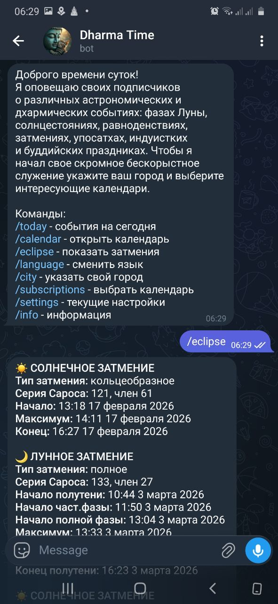
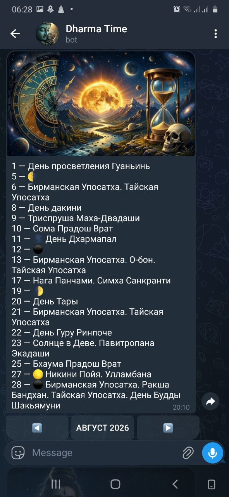
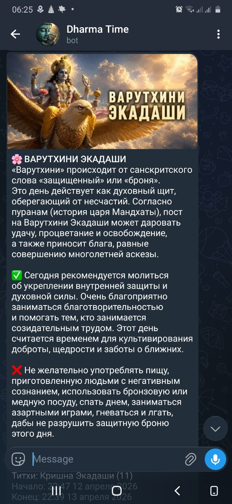
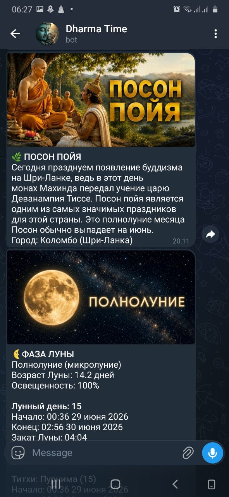

Dharma Time
Календарь духовных и астрономических событий: буддийские праздники, индуистские даты, христианские календари, фазы Луны, затмения, метеорные потоки и другие небесные явления.
Что умеет Dharma Time
Проект объединяет календарные системы, которые обычно приходится искать в разных источниках.
Буддийские календари
Тибетская традиция, Китай, Япония, Шри-Ланка, Бирма, Таиланд и другие модули.
Индуистские календари
Экадаши, панчанга, вайшнавские праздники, Северная и Южная Индия.
Христианские праздники
Православный старый и новый стиль, а также католический календарь.
Луна
Фазы Луны, лунные дни, восход и заход Луны, переходы в знаки и многое другое.
Астрономия
Затмения, метеорные потоки, кометы, планетные события, перигелий и афелий Земли.
Локальные расчеты
Многие события рассчитываются с учётом города и часового пояса пользователя.
Скриншоты
Бот еще не вышел в публичный релиз, но уже работоспособен и активно развивается.




Статус разработки
Уже прорабатывается
- затмения, лунные и солнечные события;
- панчанга с экадаши и прочими событиями;
- тхеравадинские календари с упосатхами;
- махаянские календарные модули;
- календарь и оповещения.
Планируется
- новые региональные буддийские календари;
- православные и католические праздники;
- вайшнавские события для разных сампрадай;
- астрономические уведомления для любителей наблюдений;
- улучшение интерфейса и локализации.
Поддержать Dharma Time
Dharma Time создается одним человеком и остается бесплатным для всех пользователей. Поддержка помогает оплачивать инструменты разработки, нейросети, хостинг и дальнейшее развитие календарных модулей.
Даже 2–5 долларов в месяц помогают проекту существовать и двигаться дальше.
USDT (TON)
UQCu1fb6WFRd1KdHt3SCbS0BhOYHrveCYZU97EJWLXDUPPIh
Нажмите на адрес, чтобы скопировать его.